quantpylib.hft
quantpylib.hft is our core module designed for hft-trading purposes, including modelling, analysis and simulation of high-frequency data.
quantpylib.hft.alpha is our simulator, modeller and backtester. You may simulate fills, portfolio wealth and do statistical modelling, such as fair price analysis.
quantpylib.hft.feed is our data feeder for public information and market data such as order book and trade feeds.
quantpylib.hft.oms is our order management system for positions, orders tracking and trade execution + management.
quantpylib.hft.lob is our internal limit-order book representation, and is designed to store orderbook states and buffers. There are utility functions to keep accurate representations of the internal state for both book snapshots and incremental updates. A host of other utility functions related to orderbook modelling can be found.
quantpylib.hft.trades is our internal trade buffer. There are utility functions to compute useful information and statistics from the data stored in the buffer.
quantpylib.hft.statistics is a statistics library for hft modelling - in addition it should work seamlessly with the data structures in the quantpylib.hft.lob.LOB and quantpylib.hft.trades.Trades object instances.
Examples
Data Feed
Obtaining data feeds are extremely simple with quantpylib.hft.feed.Feed objects. Simply - create a gateway object with the correct keys
and pass them in
import os
import asyncio
from pprint import pprint
from dotenv import load_dotenv
load_dotenv()
from quantpylib.gateway.master import Gateway
from quantpylib.hft.feed import Feed
keys = {
"binance": {'key':'','secret':''},
"hyperliquid": {'key':'','secret':''},
}
async def printer(data):
print(data)
async def printer_1(data):
print('1\n',data.as_dict())
async def printer_2(data):
print('2\n',data.as_dict())
async def main():
exchange,ticker = 'hyperliquid', 'BTC'
# exchange,ticker = 'binance', 'BTCUSDT'
gateway = Gateway(config_keys=keys)
await gateway.init_clients()
feed = Feed(gateway=gateway)
#code goes here
pass
if __name__ == "__main__":
asyncio.run(main())
To get a order book feed, we can write:
and we gethyperliquid/perp/l2book/BTC_depth20. Notice how we added a handler here - this is optional. We can add arbitrary number of coroutine handlers -
when the feed is received, it will be broadcast to all handlers asynchronously. All the schema is standardized - there is no need to write exchange-dependent code.
We will get (the same message)
1
{'ts': 1725903430442,
'bids': array([[5.65460e+04, 8.75000e-03],
[5.65430e+04, 9.33710e-01],
...
[5.65220e+04, 1.98847e+00]]),
'asks': array([[5.65470e+04, 2.20767e+00],
[5.65480e+04, 1.67035e+00],
...
[5.65710e+04, 2.64770e-01]])}
2
{'ts': 1725903430442,
'bids': array([[5.65460e+04, 8.75000e-03],
[5.65430e+04, 9.33710e-01],
...
[5.65220e+04, 1.98847e+00]]),
'asks': array([[5.65470e+04, 2.20767e+00],
[5.65480e+04, 1.67035e+00],
...
[5.65710e+04, 2.64770e-01]])}
quantpylib.hft.lob.LOB object - we can retrieve it using the feed id.
lob = feed.get_feed(l2_feed)
print(l2_feed)
print(lob) #`quantpylib.hft.lob.LOB` object
print(lob.get_mid(), lob.get_vamp(notional=30000)) #54884.5 54883.872068603436
print(lob.get_bids_buffer())
quantpylib.hft.trades.Trades object and get the running buffer, statistics and what not:
trades_feed = await feed.add_trades_feed(exc=exchange,ticker=ticker,handler=printer)
trades = feed.get_feed(trades_feed)
await asyncio.sleep(5)
print(trades) #`quantpylib.hft.trades.Trades` object
print(trades.get_imbalance()) #0.8328041302230744
(1725904146989, 56497.0, 0.00037, -1)
(1725904147170, 56498.0, 0.01171, 1)
(1725904147773, 56498.0, 0.02284, 1)
(1725904148396, 56497.0, 0.03539, -1)
(1725904148401, 56498.0, 0.14221, 1)
(1725904148401, 56498.0, 0.52174, 1)
(1725904148401, 56498.0, 1.06198, 1)
(1725904148401, 56498.0, 0.27407, 1)
(1725904153032, 56492.0, 0.00887, 1)
(1725904154037, 56490.0, 0.00022, 1)
(1725904157831, 56476.0, 0.002, 1)
(1725904158024, 56475.0, 0.00021, -1)
(1725904159031, 56476.0, 0.00963, 1)
time, price, size, dir. When dir = 1, it means a taker buy initiated trade.
Get all the running feed ids here:
Data Archival
In the previous section we have seen how easy it is to run tick data streams, add handlers and use LOB and Trade buffers to compute live statistics efficiently for high-frequency strategies. We would also like to have a data archival feature that allows us to store tick-data in a seamless manner to disk.
Like, one-liner seamless. Let me demonstrate. We will do the same imports and setup:
import os
import asyncio
from pprint import pprint
from dotenv import load_dotenv
load_dotenv()
from quantpylib.hft.feed import Feed
from quantpylib.gateway.master import Gateway
keys = {
"binance": {'key':'','secret':''},
"hyperliquid": {'key':'','secret':''},
}
exchanges = ['binance','hyperliquid']
async def main():
pass #<<<
if __name__ == "__main__":
asyncio.run(main())
archiver=True and list of tickers we want to archive:
async def main():
l2_feeds = {
"binance": ['BTCUSDT','ETHUSDT'],
"hyperliquid": ['BTC','SOL']
}
trade_feeds = {
"binance": ['BTCUSDT','ETHUSDT'],
"hyperliquid": ['BTC','SOL']
}
gateway = Gateway(config_keys=keys)
await gateway.init_clients()
feed = Feed(gateway=gateway,archiver=True) #enable archiver
for exchange in exchanges:
l2_feed_ids = await asyncio.gather(*[
feed.add_l2_book_feed(
exc=exchange,
ticker=ticker,
depth=20,
) for ticker in l2_feeds[exchange]
])
print(l2_feed_ids)
'''
['binance/perp/l2book/BTCUSDT_depth20', 'binance/perp/l2book/ETHUSDT_depth20']
['hyperliquid/perp/l2book/BTC_depth20', 'hyperliquid/perp/l2book/SOL_depth20']
'''
trade_feed_ids = await asyncio.gather(*[
feed.add_trades_feed(
exc=exchange,
ticker=ticker,
) for ticker in trade_feeds[exchange]
])
print(trade_feed_ids)
'''
['binance/perp/trades/BTCUSDT', 'binance/perp/trades/ETHUSDT']
['hyperliquid/perp/trades/BTC', 'hyperliquid/perp/trades/SOL']
'''
await asyncio.sleep(1e59)
await feed.cleanup()
await gateway.cleanup_clients()
And you will see that at the turn of every hour, the data for that hourly period is saved like this:
so from thearchives/ folder:
./binance/perp/trades/2024/12/BTCUSDT_3014.parquet
./binance/perp/trades/2024/12/ETHUSDT_3014.parquet
./binance/perp/l2book/2024/12/BTCUSDT_depth20_3014.parquet
./binance/perp/l2book/2024/12/ETHUSDT_depth20_3014.parquet
...
./hyperliquid/perp/trades/2024/12/BTC_3014.parquet
./hyperliquid/perp/trades/2024/12/SOL_3014.parquet
./hyperliquid/perp/l2book/2024/12/BTC_depth20_3014.parquet
./hyperliquid/perp/l2book/2024/12/SOL_depth20_3014.parquet
lob = Feed.load_lob_archives(
exc='binance',
ticker='BTCUSDT',
depth=20,
start='2024-12-30:00',
end='2024-12-31:23',
)
trades = Feed.load_trade_archives(
exc='binance',
ticker='BTCUSDT',
start='2024-12-30:00',
end='2024-12-31:23',
)
archiver=True and no scheduler -
we simply need to call
at any point in our code and the existing buffer is emptied into a parquet file with location:
For example the above call would save existing buffer to
.data_archives/hyperliquid/perp/trades/SOL.parquet
.data_archives/hyperliquid/perp/trades/BTC.parquet
.data_archives/hyperliquid/perp/l2book/BTC_depth20.parquet
.data_archives/hyperliquid/perp/l2book/SOL_depth20.parquet
#same for binance
lobs = Feed.load_lob_archive(
exc='binance',
ticker='BTCUSDT',
depth=20,
path='./data_archives/',
# raw=True
)
trades = Feed.load_trade_archive(
exc='binance',
ticker='BTCUSDT',
path='./data_archives/',
# raw=True
)
ts price size dir
0 1735569691383 92514.9 0.517 1
1 1735569691480 92514.8 0.051 -1
2 1735569691539 92514.9 0.051 1
...
OMS
It is easy to create a manager class - it is similar to thequantpylib.hft.feed.Feed objects. Simply - create a gateway object with the correct keys and pass them in.
We will demonstrate with examples:
import os
import asyncio
from pprint import pprint
from dotenv import load_dotenv
load_dotenv()
from quantpylib.hft.oms import OMS
from quantpylib.gateway.master import Gateway
import quantpylib.standards.markets as markets
config_keys = {
'binance': {
'key': '1234',
'secret': '1234',
},
'hyperliquid': {
'key': '1234',
'secret': '1234',
}
}
gateway = Gateway(config_keys)
async def main():
await gateway.init_clients()
oms = OMS(gateway)
await oms.init()
#code goes here...
###
await oms.cleanup()
if __name__ == "__main__":
asyncio.run(main())
For all of our socket-based message handlers, we will use a generic printer to showcase results:
async def printer(data):
if isinstance(data,dict) or isinstance(data,list):
pprint(data)
else:
try: pprint(data.as_dict())
except: pprint(data.as_list())
{'base_asset': 'BTC',
'min_notional': Decimal('10.0'),
'price_precision': 1,
'quantity_precision': 5,
'quote_asset': 'USDT'}
pprint(oms.lagged_price(exc='hyperliquid', ticker='ETH')) #Decimal('2368.25')
pprint(oms.lot_precision(exc='hyperliquid', ticker='BTC')) #5
pprint(oms.price_precision(exc='hyperliquid', ticker='DOGE')) #6
pprint(oms.rounded_lots(exc='hyperliquid', ticker='BTC',amount=0.0023032)) #0.0023
pprint(oms.rounded_price(exc='hyperliquid', ticker='BTC',price=62000.1234)) #62000.1
pprint(oms.min_notional(exc='hyperliquid', ticker='BTC')) #Decimal('10.0')
pprint(oms.rand_cloid(exc='binance')) #'b486130e1b35986abc803bb79d2e675d'
pprint(oms.common_lot_precision(ex1='hyperliquid',ex2='binance',ticker1='BTC',ticker2='BTCUSDT')) #3
pprint(oms.common_price_precision(ex1='hyperliquid',ex2='binance',ticker1='BTC',ticker2='BTCUSDT')) #1
pprint(oms.common_min_notional(ex1='hyperliquid',ex2='binance',ticker1='BTC',ticker2='BTCUSDT')) #Decimal('100')
We would like to get some positions data. Note that when oms.init() is called, all orders and positions are automatically mirrored using underlying exchange socket subscriptions. We can make connection-less request by retrieving local state:
pprint(await oms.positions_get(exc='hyperliquid')) #HTTP requests made
pprint(await oms.positions_get_all())
{'SOL': {'amount': Decimal('1.0'),
'entry': Decimal('134.81'),
'ticker': 'SOL',
'unrealized_pnl': -0.3,
'value': Decimal('134.51')}}
{'binance': {'QUANTUSDT': {'amount': Decimal('826'),
'entry': Decimal('0.1250522412206'),
'ticker': 'QUANTUSDT',
'unrealized_pnl': 1.03231002,
'value': Decimal('104.32546026')}},
'hyperliquid': {'SOL': {'amount': Decimal('1.0'),
'entry': Decimal('134.81'),
'ticker': 'SOL',
'unrealized_pnl': -0.3,
'value': Decimal('134.51')}}}
If we want to get the live positions object that tracks all positions, or register a handler on position change, we may do so. In particular, we can register handler on_update which passes the entire positions page (and/or) on_delta which passes the change in positions. Furthermore, the return value is the Positions object which is 'alive', so to speak, and keeps up to date with filled orders.
live_positions = await oms.positions_mirror(exc='hyperliquid',on_update=printer,on_delta=printer)
print(live_positions)#<quantpylib.standards.portfolio.Positions object at 0x12a98c8f0>
We may do the same with orders:
for output:{1234: {
'amount': Decimal('1.0'),
'cloid': '',
'filled_sz': Decimal('0.0'),
'oid': '1234',
'ord_status': 'NEW',
'price': Decimal('100.0'),
'ticker': 'SOL',
'timestamp': 1726113126684
}
}
{'hyperliquid': {1234: {'amount': Decimal('1.0'),
'cloid': '',
'filled_sz': Decimal('0.0'),
'oid': '1234',
'ord_status': 'NEW',
'price': Decimal('100.0'),
'ticker': 'SOL',
'timestamp': 1726113126684}}}
'binance': .... {}
Orders object:
live_orders = await oms.orders_mirror(exc='hyperliquid',on_update=printer,on_delta=printer)
print(live_orders)#<quantpylib.standards.portfolio.Orders object at 0x13252f050>
Now that we have registered some handlers for orders, and what not - let us see what the messages look like. We can make a limit order through the OMS - the parameters are the same as in Gateway usage:
cloid = oms.rand_cloid(exc='hyperliquid')
await oms.limit_order(exc='hyperliquid',ticker='SOL',amount=1,price=129.56,cloid=cloid)
await oms.limit_order(exc='binance',ticker='SOLUSDT',price_match=markets.PRICE_MATCH_QUEUE_1,amount=1)
hyperliquid, so let's see what gets printed:
The on_delta handler receives two messages:
{'amount': Decimal('1'),
'cloid': '0x272e45bf06706c3259f41079a1d48d2a',
'exc': 'hyperliquid',
'filled_sz': Decimal('0'),
'last_fill_sz': Decimal('0'),
'oid': None,
'ord_status': 'PENDING',
'ord_type': None,
'price': Decimal('129.56'),
'price_match': None,
'reduce_only': None,
'sl': None,
'ticker': 'SOL',
'tif': None,
'timestamp': 1726154778980,
'tp': None}
{'amount': Decimal('1.0'),
'cloid': '0x272e45bf06706c3259f41079a1d48d2a',
'exc': 'hyperliquid',
'filled_sz': Decimal('0.0'),
'last_fill_sz': Decimal('0.0'),
'oid': '1234',
'ord_status': 'NEW',
'ord_type': None,
'price': Decimal('129.56'),
'price_match': None,
'reduce_only': None,
'sl': None,
'ticker': 'SOL',
'tif': None,
'timestamp': 1726154781307,
'tp': None}
PENDING status. This is followed by a NEW order which means the order was acknowledged successful by the exchange. The on_update handler sends this order, along with all the other open orders - which we print as a list:
[{'amount': Decimal('1.0'),
...
'timestamp': 1726123317580,
'tp': None},
{'amount': Decimal('1.0'),
'cloid': '0x272e45bf06706c3259f41079a1d48d2a',
'exc': 'hyperliquid',
'filled_sz': Decimal('0.0'),
'last_fill_sz': Decimal('0.0'),
'oid': '1234',
'ord_status': 'NEW',
'ord_type': None,
'price': Decimal('129.56'),
'price_match': None,
'reduce_only': None,
'sl': None,
'ticker': 'SOL',
'tif': None,
'timestamp': 1726154781307,
'tp': None}]
on_delta:
{'amount': Decimal('1.0'),
'cloid': '0x272e45bf06706c3259f41079a1d48d2a',
'exc': 'hyperliquid',
'filled_sz': Decimal('0.0'),
'last_fill_sz': Decimal('0.0'),
'oid': '1234',
'ord_status': 'CANCELLED',
'ord_type': None,
'price': Decimal('129.56'),
'price_match': None,
'reduce_only': None,
'sl': None,
'ticker': 'SOL',
'tif': None,
'timestamp': 1726154781307,
'tp': None}
on_update prints the new list (not shown), this time without the cancelled order - since it is not on the orders page anymore (it is no longer open).
We can of course, do a market-order:
Which also gives aon_delta, PENDING message:
{'amount': Decimal('-1'),
'cloid': '0xa70c993f525b2e8106ffd60fd19af35e',
'exc': 'hyperliquid',
'filled_sz': Decimal('0'),
'last_fill_sz': Decimal('0'),
'oid': None,
'ord_status': 'PENDING',
'ord_type': None,
'price': None,
'price_match': None,
'reduce_only': None,
'sl': None,
'ticker': 'SOL',
'tif': None,
'timestamp': 1726154778980,
'tp': None}
positions's on_delta message is called with each fill
{'amount': Decimal('0.19'),
'delta': Decimal('-0.81'),
'entry': Decimal('134.81'),
'ticker': 'SOL'}
{'amount': Decimal('0.00'),
'delta': Decimal('-0.19'),
'entry': Decimal('134.79'),
'ticker': 'SOL'}
amount is the new signed position held after delta is filled - at the end of this market order our SOL position is closed fully, so our positions's on_update receives the positions page (no open positions):
on the other hand the PENDING order created is acknowledged by exchange to NEW and then immediately FILLED on creation with on_delta triggers:
{'amount': Decimal('-1.0'),
'cloid': '0xa70c993f525b2e8106ffd60fd19af35e',
'exc': 'hyperliquid',
'filled_sz': Decimal('0.0'),
'last_fill_sz': Decimal('0.0'),
'oid': 'yomama',
'ord_status': 'NEW',
'ord_type': None,
'price': Decimal('127.69'), #hyperliquid's market order is an aggressive limit order
'price_match': None,
'reduce_only': None,
'sl': None,
'ticker': 'SOL',
'tif': None,
'timestamp': 1726154797325,
'tp': None}
{'amount': Decimal('-1.0'),
'cloid': '0xa70c993f525b2e8106ffd60fd19af35e',
'exc': 'hyperliquid',
'filled_sz': Decimal('1.0'),
'last_fill_sz': Decimal('1.0'),
'oid': 'yomama',
'ord_status': 'FILLED',
'ord_type': None,
'price': Decimal('127.69'),
'price_match': None,
'reduce_only': None,
'sl': None,
'ticker': 'SOL',
'tif': None,
'timestamp': 1726154797325,
'tp': None}
on_update triggers:
We will demonstrate a complex order supported by the OMS - let's call it hedge_order. It is quite often that we want one order to trigger another in a multi-leg trade. For instance, a triangular arbitrage, cross-exchange market making, funding arbitrage and l/s arbitrage all often use similar fixtures. A hedge order allows us to submit a maker-order, and the matching taker order is triggered with size matching that of the filled amount on the maker-leg. When lot size rounding doesn't allow for complete hedging, the remaining balance is stored and flushed with the next best available order. Let's see how we can make use of this. To get information from both exchanges, we wil add the binance handlers:
await oms.positions_mirror(exc='binance',on_update=printer,on_delta=printer)
await oms.orders_mirror(exc='binance',on_update=printer,on_delta=printer)
await asyncio.sleep(5)
await oms.hedge_order(
maker_order = {
"exc": "binance",
"ticker": "SOLUSDT",
"amount": -3,
"price_match": markets.PRICE_MATCH_QUEUE_5
},
hedge_order = {
"exc": "hyperliquid",
"ticker": "SOL",
}
)
>> orders delta:
{'amount': Decimal('-3'),
'cloid': 'c484811d8ce145004eeb26c917013c29',
'exc': 'binance',
'filled_sz': Decimal('0'),
'last_fill_sz': Decimal('0'),
'oid': None,
'ord_status': 'PENDING',
'ord_type': None,
'price': None,
'price_match': 'QUEUE_5',
'reduce_only': None,
'sl': None,
'ticker': 'SOLUSDT',
'tif': None,
'timestamp': 1726199235551,
'tp': None}
{'amount': Decimal('-3'),
'cloid': 'c484811d8ce145004eeb26c917013c29',
'exc': 'binance',
'filled_sz': Decimal('0'),
'last_fill_sz': Decimal('0'),
'oid': '68254554715',
'ord_status': 'NEW',
'ord_type': 'LIMIT',
'price': Decimal('134.5460'),
'price_match': 'QUEUE_5',
'reduce_only': False,
'sl': None,
'ticker': 'SOLUSDT',
'tif': 'GTC',
'timestamp': 1726199241966,
'tp': None}
>> orders snapshot:
[{'amount': Decimal('-3'),
'cloid': 'c484811d8ce145004eeb26c917013c29',
'exc': 'binance',
'filled_sz': Decimal('0'),
'last_fill_sz': Decimal('0'),
'oid': '68254554715',
'ord_status': 'NEW',
'ord_type': 'LIMIT',
'price': Decimal('134.5460'),
'price_match': 'QUEUE_5',
'reduce_only': False,
'sl': None,
'ticker': 'SOLUSDT',
'tif': 'GTC',
'timestamp': 1726199241966,
'tp': None}]
>> positions delta:
{'amount': Decimal('-3'),
'delta': Decimal('-3'),
'entry': Decimal('134.546'),
'ticker': 'SOLUSDT'}
>> positions snapshot:
{'SOLUSDT': {'amount': Decimal('-3'),
'entry': Decimal('134.546'),
'ticker': 'SOLUSDT'}}
{'amount': Decimal('-3'),
'cloid': 'c484811d8ce145004eeb26c917013c29',
'exc': 'binance',
'filled_sz': Decimal('3'),
'last_fill_sz': Decimal('3'),
'oid': '68254554715',
'ord_status': 'FILLED',
'ord_type': 'LIMIT',
'price': Decimal('134.5460'),
'price_match': 'QUEUE_5',
'reduce_only': False,
'sl': None,
'ticker': 'SOLUSDT',
'tif': 'GTC',
'timestamp': 1726199256915,
'tp': None}
PENDING to NEW to FILLED
{'amount': Decimal('3.0'),
'cloid': '0xb09f965b3b58613bce2b12f15a94ad47',
'exc': 'hyperliquid',
'filled_sz': Decimal('0'),
'last_fill_sz': Decimal('0'),
'oid': None,
'ord_status': 'PENDING',
'ord_type': None,
'price': None,
'price_match': None,
'reduce_only': None,
'sl': None,
'ticker': 'SOL',
'tif': None,
'timestamp': 1726199235551,
'tp': None}
{'amount': Decimal('3.0'),
'cloid': '0xb09f965b3b58613bce2b12f15a94ad47',
'exc': 'hyperliquid',
'filled_sz': Decimal('0.0'),
'last_fill_sz': Decimal('0.0'),
'oid': '37771235449',
'ord_status': 'NEW',
'ord_type': None,
'price': Decimal('141.36'),
'price_match': None,
'reduce_only': None,
'sl': None,
'ticker': 'SOL',
'tif': None,
'timestamp': 1726199257706,
'tp': None}
{'amount': Decimal('3.0'),
'cloid': '0xb09f965b3b58613bce2b12f15a94ad47',
'exc': 'hyperliquid',
'filled_sz': Decimal('3.0'),
'last_fill_sz': Decimal('3.0'),
'oid': '37771235449',
'ord_status': 'FILLED',
'ord_type': None,
'price': Decimal('141.36'),
'price_match': None,
'reduce_only': None,
'sl': None,
'ticker': 'SOL',
'tif': None,
'timestamp': 1726199257706,
'tp': None}
{'amount': Decimal('3.0'),
'delta': Decimal('3.0'),
'entry': Decimal('134.65'),
'ticker': 'SOL'}
{'SOL': {'amount': Decimal('3.0'), 'entry': Decimal('134.65'), 'ticker': 'SOL'}}
Market-Making (Feed,OMS)
In the sections for Data Feed and OMS, we showed how we can obtain live market data and trigger exchange actions, as well as track account states. We shall provide an example, and demonstrate the multi-exchange compatibility and portability of our logic. There is no alpha in the quoter - it is for illustrative purposes only.
Typically, a market-maker needs to be able to track their portfolio states: order states (pending/open/cancelled/rejected), open positions, account equity/balance and so on. In general, a market maker action triggers include but are not limited to internal clock cycles, trade arrival, orderbook delta updates pushed and a number of variable proprietary logic. We may choose to act on these data immediately upon arrival (a onTick behavior) or store it in some shared state that is later used to compute optimal market quotes. We will explore all of these options.
Let us make some imports:
import os
import asyncio
from pprint import pprint
from decimal import Decimal
from dotenv import load_dotenv
load_dotenv()
import quantpylib.standards.markets as markets
from quantpylib.hft.oms import OMS
from quantpylib.hft.feed import Feed
from quantpylib.gateway.master import Gateway
from quantpylib.utilities.general import _time
from quantpylib.utilities.general import save_pickle, load_pickle
exchanges = ['bybit','hyperliquid']
configs = {
"binance" : {
"tickers":["CELOUSDT"],
},
"bybit" : {
"tickers":["CELOUSDT","AERGOUSDT","DYDXUSDT"],
},
"hyperliquid" : {
"tickers":["GALA","RDNT","DYDX"],
},
}
config_keys = {
"binance" : {
"key":os.getenv('BIN_KEY'),
"secret":os.getenv('BIN_SECRET'),
},
"bybit" : {
"key":os.getenv('BYBIT_KEY'),
"secret":os.getenv('BYBIT_SECRET'),
},
"hyperliquid" : {
"key":os.getenv('HPL_KEY'),
"secret":os.getenv('HPL_SECRET'),
},
}
gateway = Gateway(config_keys=config_keys)
buffer_size = 10000
l2_feeds = {exc : {} for exc in exchanges}
trade_feeds = {exc : {} for exc in exchanges}
order_value = 50
bybit and hyperliquid. The keys are passed into the gateway. For demonstration, we will
use a fixed order size of fifty dollars.
The gateway is the connector to the relevant exchanges - which is passed into the oms and feed objects. The oms handles order/position tracking, recovery, execution and auxiliary tasks. The feed does tick data subscription, storing, and retrieval.
We can instantiate the feed and oms and set up how long we want to run our quotes:
oms = OMS(gateway=gateway)
feed = Feed(gateway=gateway)
play = lambda : asyncio.sleep(60 * 10 * 3)
time = lambda : _time()
oms - this callback coroutine is called every specified interval. This could be as simple as 'submit/cancel quotes every 500ms' and so on. We will demonstrate an event-based quoter for now, but for demonstration - we will just print the exchange balances every 5 seconds - no action is taken.
The actual quoter is done in a make coroutine that runs asynchronously for each ticker in each exchange:
async def clock_event():
pprint(await oms.get_all_balances())
async def main():
await gateway.init_clients()
await oms.init()
await oms.add_clock_callback(
callback=clock_event,
interval_ms=5000
)
quote_coros = []
for exchange in exchanges:
for ticker in configs[exchange]["tickers"]:
quote_coros.append(make(exc=exchange,ticker=ticker))
await asyncio.gather(*quote_coros)
#save data after finish quoting (can ignore), cleanup
l2_data = {
exc:{ticker:lob.buffer_as_list() for ticker,lob in l2_feed.items()}
for exc,l2_feed in l2_feeds.items()
}
trade_data = {
exc:{ticker:trades.get_buffer() for ticker,trades in trade_feed.items()}
for exc,trade_feed in trade_feeds.items()
}
save_pickle('hft_data.pickle',(l2_data,trade_data))
await oms.cleanup()
async def make(exc,ticker):
#implement maker logic
return
if __name__ == "__main__":
asyncio.run(main())
Since we called the make function, we have to implement the maker logic. First, we will get a trade feed with no handler (this is just done for show, we won't use the trade data here). We will, however, register a handler for the orderbook ticks:
async def make(exc,ticker):
trade_feed = await feed.add_trades_feed(
exc=exc,
ticker=ticker,
buffer=buffer_size,
handler=None
)
live_orders = oms.orders_peek(exc=exc)
async def l2_handler(lob):
#this is called on orderbook tick
#lob is a quantpylib.hft.lob.LOB object
#submit actions on book depth stream
return
l2_feed = await feed.add_l2_book_feed(
exc=exc,
ticker=ticker,
handler=l2_handler,
buffer=buffer_size
)
trade_feeds[exc][ticker] = feed.get_feed(trade_feed)
l2_feeds[exc][ticker] = feed.get_feed(l2_feed)
await play()
l2_handler receives a lob object which is a quantpylib.hft.lob.LOB object - we can obtain either the live buffer from this object or statistics such as mid, vamp indicators and vol.
The oms does order tracking and maintains live_orders which is a quantpylib.standards.portfolio.Orders object. This is achieved via the gateway's underlying socket connections and requests. Note that the oms itself is a separate functionality provided by quantpylib, and is able to do a variety of useful things - such as registering coroutine handlers for order updates, position fills and so on - see examples here.
In this section, we will not register any order/position update handlers, and just rely on the live updation of our orders which is intitated by default on oms.init(). Say, inside the l2_handler we would like to submit/cancel orders using the following logic:
1. Determine the price we want to quote, say the third from top of book. Fix order value at 50.0.
2. If there is no pending (submitted and unacknowledged) bid or ask, or existing orders that are tighter than price at step 1 - submit an order at determined price.
3. If there are acknowledged orders that are tighter than the determined levels, cancel them. If there are acknowledged orders that are further from top of book than the determined levels, let them sit in the order book to maintain price-time priority.
4. If there are more than 5 resting orders on each side, cancel excess orders starting from lowest price priority.
The above logic tries to pick up taker orders that slam a thin orderbook through multiple levels. Obviously, the feasibility of this depends on the market, our risk management, and whether a mean-reversionary effect exists upon said price impact, and this effect relative to costs/adverse fills. The logic tries to maintain time priority for duplicate levels. We make no comment or assertions on the viability of said 'rules'.
For specifics on how to pass the parameters to oms methods, refer to documentation and examples. gateway documentation and examples should be helpful.
async def l2_handler(lob):
mid = lob.get_mid()
inventory = float(oms.get_position(exc=exc,ticker=ticker)) * mid
bid_price = lob.bids[2,0]
ask_price = lob.asks[2,0]
order_bids = live_orders.get_bid_orders(ticker=ticker)
order_asks = live_orders.get_ask_orders(ticker=ticker)
any_pending_bid = any(order.ord_status == markets.ORDER_STATUS_PENDING for order in order_bids)
any_pending_ask = any(order.ord_status == markets.ORDER_STATUS_PENDING for order in order_asks)
any_tight_bid = any(order.price is not None and order.price >= Decimal(str(bid_price)) for order in order_bids)
any_tight_ask = any(order.price is not None and order.price <= Decimal(str(ask_price)) for order in order_asks)
orders = []
if not any_tight_bid and not any_pending_bid:
orders.append({
"exc":exc,
"ticker":ticker,
"amount":order_value/lob.get_mid(),
"price":bid_price,
"round_to_specs":True,
})
if not any_tight_ask and not any_pending_ask:
orders.append({
"exc":exc,
"ticker":ticker,
"amount":order_value/lob.get_mid() * -1,
"price":ask_price,
"round_to_specs":True,
})
ack_bids = [order for order in order_bids if order.ord_status != markets.ORDER_STATUS_PENDING]
ack_asks = [order for order in order_asks if order.ord_status != markets.ORDER_STATUS_PENDING]
cancel_bids = [order for order in ack_bids if order.price > Decimal(str(bid_price))]
cancel_asks = [order for order in ack_asks if order.price < Decimal(str(ask_price))]
cancels = cancel_bids + cancel_asks
cancels += ack_bids[5 + len(cancel_bids):]
cancels += ack_asks[5 + len(cancel_asks):]
cancels = [{
"exc":order.exc,
"ticker":order.ticker,
"oid":order.oid
} for order in cancels]
if orders:
await asyncio.gather(*[
oms.limit_order(**order) for order in orders
])
if cancels:
await asyncio.gather(*[
oms.cancel_order(**cancel) for cancel in cancels
])
On the web-platforms of selected exchanges, we should see the quotes submitted - here is bybit:

We see our tightest quotes are third from mid, with deeper levels sitting in the order book. A price jump from taker order 0.1088 to 0.1085 hit our bid.
Backtesting (Feed,OMS)
In this section, we show how to backtest using the quantpylib.hft.feed.Feed and quantpylib.hft.oms.OMS objects. As pre-requisite: please read the section on using the Feed and OMS modules, as well as using the section on using them in our market making demo.
Minimal code change is required. In fact, from the market-making demo, all we change is:
simulated = True
if simulated:
from quantpylib.hft.mocks import Replayer, Latencies
(l2_data,trade_data) = load_pickle('hft_data.pickle')
replayer = Replayer(
l2_data = l2_data,
trade_data = trade_data,
gateway=gateway
)
oms = replayer.get_oms()
feed = replayer.get_feed()
play = lambda : replayer.play()
time = lambda : replayer.time()
else:
oms = OMS(gateway=gateway)
feed = Feed(gateway=gateway)
play = lambda : asyncio.sleep(60 * 10 * 3)
time = lambda : _time()
quantpylib.hft.mocks.Replayer class provides mock classes for the OMS and Feed that behaves like the actual trading agents. This Replayer simulates agents involved in trading, such as public/private feed latencies, order submissions, matching and more. We don't need anything else, when the await play() is called, the backtest is run.
Note that we can pass in a number of optional paramters, for example:
exchange_fees = {
"bybit": {
"maker":0.0002,
"taker":0.0005
},
"hyperliquid": {
"maker":0.0001,
"taker":0.0003
}
}
exchange_latencies = {
"bybit": {
Latencies.REQ_PUBLIC:100,
Latencies.REQ_PRIVATE:50,
Latencies.ACK_PUBLIC:100,
Latencies.ACK_PRIVATE:50,
Latencies.FEED_PUBLIC:100,
Latencies.FEED_PRIVATE:50,
},
"hyperliquid": {
Latencies.REQ_PUBLIC:200,
Latencies.REQ_PRIVATE:150,
Latencies.ACK_PUBLIC:200,
Latencies.ACK_PRIVATE:150,
Latencies.FEED_PUBLIC:200,
Latencies.FEED_PRIVATE:150,
}
}
replayer = Replayer(
l2_data = l2_data,
trade_data = trade_data,
gateway=gateway,
exchange_fees=exchange_fees,
exchange_latencies=exchange_latencies
)
dict_keys(['bybit', 'hyperliquid'])
dict_keys(['CELOUSDT', 'AERGOUSDT', 'DYDXUSDT'])
{'ts': 1728232861170,
'b': array([[7.46200e-01, 5.80100e+02],
[7.46100e-01, 7.03100e+02],
...
[7.41300e-01, 1.22740e+03]]),
'a': array([[7.4640e-01, 1.1600e+02],
[7.4650e-01, 1.0100e+01],
...
[7.4900e-01, 3.7459e+03]])}
print(trade_data.keys())
print(trade_data['bybit'].keys())
print(trade_data['bybit']['CELOUSDT'][0])
dict_keys(['bybit', 'hyperliquid'])
dict_keys(['CELOUSDT', 'AERGOUSDT', 'DYDXUSDT'])
[ 1.72823125e+12 7.48300000e-01 8.10000000e+00 -1.00000000e+00]
On top of providing the mock classes, the Replayer class has utility functions that plot useful statistics about portfolio behaviour during the backtest. For example, we can print/plot the equity of an exchange:
equity inventory pnl CELOUSDT AERGOUSDT DYDXUSDT
ts
2024-10-06 16:37:25.646 9999.958291 -100.062330 0.000000 -100.062330 0.00000 0.0000
2024-10-06 16:37:30.646 9999.765185 321.157780 -0.193106 321.157780 0.00000 0.0000
2024-10-06 16:37:35.646 9999.743700 321.136295 -0.214591 321.136295 0.00000 0.0000
2024-10-06 16:37:40.646 9999.510305 435.397155 -0.447985 435.397155 0.00000 0.0000
2024-10-06 16:37:45.646 9999.510305 435.397155 -0.447985 435.397155 0.00000 0.0000
... ... ... ... ... ... ...
2024-10-06 16:44:00.646 9990.384971 1869.103225 -9.573319 2347.421175 61.41905 -539.7370
2024-10-06 16:44:05.646 9990.542696 1869.260950 -9.415594 2347.578900 61.41905 -539.7370
2024-10-06 16:44:10.646 9989.687043 2081.486310 -10.271248 2559.192660 61.41905 -539.1254
2024-10-06 16:44:15.646 9988.824693 2062.252035 -11.133598 2540.487285 61.41905 -539.6543
2024-10-06 16:44:20.646 9990.357818 2057.837550 -9.600473 2536.072800 61.41905 -539.6543
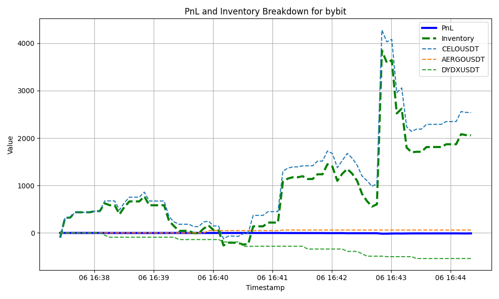
the exchange breakdown:
with prints: bybit hyperliquid sum(exchange)
ts
2024-10-06 16:37:25.646 0.000000 0.000000 0.000000
2024-10-06 16:37:30.646 -0.193106 0.000000 -0.193106
2024-10-06 16:37:35.646 -0.214591 0.000000 -0.214591
2024-10-06 16:37:40.646 -0.447985 0.000000 -0.447985
2024-10-06 16:37:45.646 -0.447985 0.000000 -0.447985
... ... ... ...
2024-10-06 16:44:00.646 -9.573319 -0.156068 -9.729387
2024-10-06 16:44:05.646 -9.415594 -0.153772 -9.569366
2024-10-06 16:44:10.646 -10.271248 -0.313967 -10.585215
2024-10-06 16:44:15.646 -11.133598 -0.319717 -11.453315
2024-10-06 16:44:20.646 -9.600473 -0.349887 -9.950360
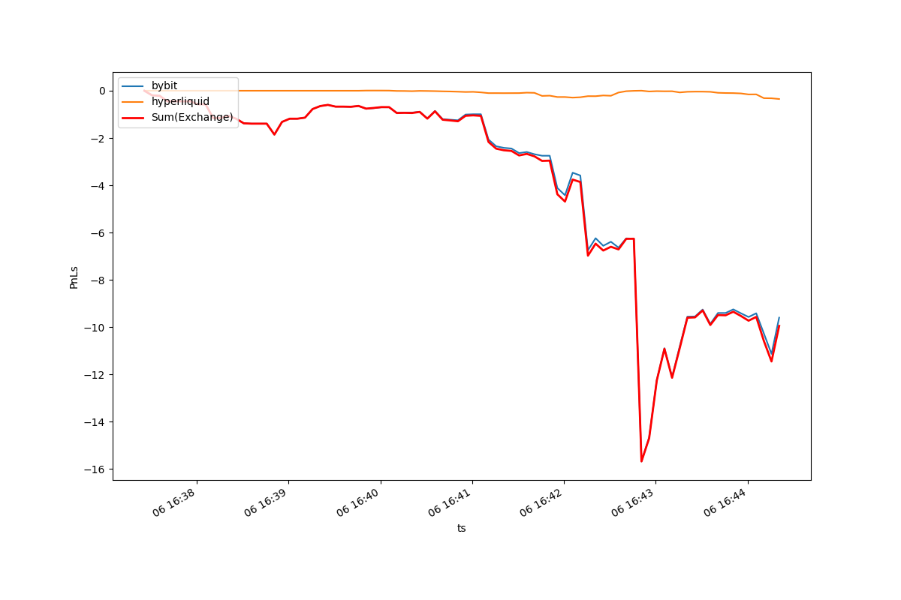
the markouts by ticker, exchange or aggregated:
with prints: Tick 1s 2s 3s 4s 5s 6s 7s ... 23s 24s 25s 26s 27s 28s 29s 30s
0 -0.000474 -0.000474 0.000474 0.000474 0.000474 0.000474 0.000474 0.000474 ... 0.000474 0.000474 0.000474 0.000474 0.000474 0.000474 0.000474 0.000474
1 -0.000474 -0.000474 0.000474 0.000474 0.000474 0.000474 0.000474 0.000474 ... 0.000474 0.000474 0.000474 0.000474 0.000474 0.000474 0.000474 0.000474
2 0.000000 0.000000 0.000000 0.000000 0.000000 0.000000 0.000474 0.000474 ... 0.000000 0.000000 0.000000 0.000000 0.000000 0.000000 0.000000 0.000000
3 0.000000 0.000000 0.000000 0.000000 0.000000 0.000000 0.000474 0.000474 ... 0.000000 0.000000 0.000000 0.000000 0.000000 0.000000 0.000000 0.000000
4 -0.000067 -0.000067 -0.000067 0.000067 0.000067 0.000067 0.000067 0.000602 ... 0.001137 0.001137 0.001137 0.001137 0.001137 0.001137 0.001137 0.001137
.. ... ... ... ... ... ... ... ... ... ... ... ... ... ... ... ... ...
620 0.000048 0.000338 0.000338 0.000337 -0.000072 -0.000072 NaN NaN ... NaN NaN NaN NaN NaN NaN NaN NaN
621 0.000338 0.000337 0.000337 -0.000024 -0.000347 -0.000156 NaN NaN ... NaN NaN NaN NaN NaN NaN NaN NaN
622 0.000337 0.000337 0.000337 -0.000354 NaN NaN NaN NaN ... NaN NaN NaN NaN NaN NaN NaN NaN
623 0.000337 -0.000042 -0.000035 NaN NaN NaN NaN NaN ... NaN NaN NaN NaN NaN NaN NaN NaN
624 0.000142 NaN NaN NaN NaN NaN NaN NaN ... NaN NaN NaN NaN NaN NaN NaN NaN
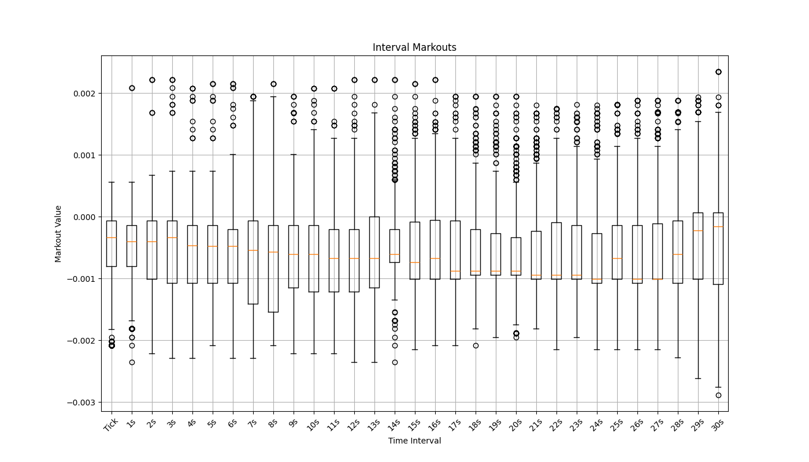
prices and fills:
with prints: b a
ts
2024-10-06 16:37:21.650 0.7477 0.7478
2024-10-06 16:37:21.670 0.7477 0.7478
2024-10-06 16:37:21.690 0.7477 0.7478
2024-10-06 16:37:21.710 0.7477 0.7478
2024-10-06 16:37:21.730 0.7477 0.7478
... ... ...
2024-10-06 16:44:16.750 0.7435 0.7438
2024-10-06 16:44:16.770 0.7435 0.7438
2024-10-06 16:44:16.790 0.7435 0.7438
2024-10-06 16:44:16.850 0.7435 0.7438
2024-10-06 16:44:16.870 0.7439 0.7441
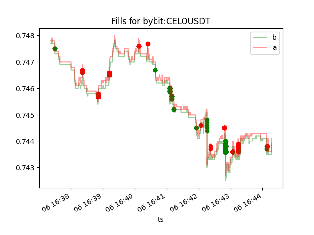
or actions:
with prints: ts price size dir is_maker exc ticker
0 1.728233e+12 0.7478 66.9 -1 True bybit CELOUSDT
1 1.728233e+12 0.7478 66.9 -1 False bybit CELOUSDT
...
625 1.728233e+12 0.0207 878 1 True hyperliquid GALA
Backtest (deprecated)
We may want to test some order simulation and fills. To do that, we would need to use the
quantpylib.hft.alpha.Alpha object, which extends the quantpylib.hft.alpha.Simulator.
Looking at the documentation, the Alpha object takes in cash, maker fees, taker fees and arguments to Simulator,
which takes in some numpy orderbook and trades data.
Let's load some data (note that the ob and trades objects in Section Statistics example can be directly passed
into Simulator instances).
from quantpylib.utilities.general import load_pickle
(
ob_timestamps, #milliseconds
bids,
asks,
mids,
trades
) = load_pickle("hft_data") #from the /examples folder
print(ob_timestamps.shape, bids.shape, asks.shape, mids.shape) #(6101,) (6101, 20, 2) (6101, 20, 2) (6101,)
print(trades.shape) #(3242, 4)
ob_timestamps >> [1722092399738 1722092400349 ... 1722095998678 1722095999283]
bids[0] >> [[2.0245e-01 1.9000e+02]
[2.0244e-01 1.2500e+02]
[2.0243e-01 7.5000e+02]
[2.0242e-01 2.5800e+02]
...]
asks[0] >> [[2.0263e-01 2.3800e+02]
[2.0264e-01 2.4600e+02]
[2.0265e-01 3.2500e+02]
[2.0266e-01 8.4400e+02]
...]
mids >> [0.20254 0.202545 0.202545 ... 0.20073 0.20073 0.20073 ]
trades >>
[[ 1.72209242e+12 2.02640000e-01 6.80000000e+01 1.00000000e+00]
[ 1.72209242e+12 2.02450000e-01 2.13000000e+02 -1.00000000e+00]
[ 1.72209242e+12 2.02440000e-01 1.25000000e+02 -1.00000000e+00]
...
[ 1.72209600e+12 2.00810000e-01 1.07000000e+03 1.00000000e+00]
[ 1.72209600e+12 2.00810000e-01 8.57000000e+02 1.00000000e+00]
[ 1.72209600e+12 2.00810000e-01 1.15000000e+02 1.00000000e+00]]
Some imports:
import numpy as np
import matplotlib.pyplot as plt
from quantpylib.hft.alpha import EVENT_CLOCK, EVENT_LOB, EVENT_TRADE
from quantpylib.hft.alpha import Alpha
from quantpylib.hft.features import rolling_vol
There are not that many endpoints to implement. We can see in the docs that Simulator exposes compute_*_features, and Alpha exposes event_orders_update and event_orders_fill.
The compute methods are data pre-processing step where you can do heavy numerical/vectorized work on your data buffers to aid in your signal. The event_orders_update handles your live orders; here you can handle order creates, cancels and modifies. event_orders_fill is a notification for orders filled. All orders created have the format (price, size, dir, cloid). Cloid can be set to any value or specific value for your own needs. Taker orders are just aggressive prices, the actual filled price is matched against the order book liquidity. Maker orders are assumed filled when there is a crossing (strict inequality) trade event.
For demonstration, we will just use some orderbook features. In fact we are just going to use volatility and quote symmetrically around the mid price:
class Strat(Alpha):
def event_orders_fill(
self,cash,equity,position,ts,event_type,event_id,type_id,
trade_buffer,ob_timestamps,ob_bids,ob_asks,ob_mids,features,
running_event_ids,running_type_ids,
orders,filled_orders,is_maker,**kwargs
):
pass
def event_orders_update(
self,cash,equity,position,ts,event_type,event_id,type_id,
trade_buffer,ob_timestamps,ob_bids,ob_asks,ob_mids,features,
open_orders,running_event_ids,running_type_ids,**kwargs
):
pass
def compute_lob_features(self,lob_timestamps,lob_mids,lob_bids,lob_asks):
pass
def compute_trade_features(self,trade_buffer):
pass
#def other compute_*_
n = len(lob_timestamps). We are just going to use the rolling volatility function from quantpylib.hft.features.
def compute_lob_features(self,lob_timestamps,lob_mids,lob_bids,lob_asks):
return {
"vol" : rolling_vol(lob_mids,n=200),
}
event_orders_update, kwargs contain additional information w.r.t to the event type. You can have custom events, but by default, we have EVENT_CLOCK, EVENT_LOB and EVENT_TRADE. Since these events have different cardinality (number of orderbook data different from trades, for instance), the last/most-recent index
we are able to access is given in running_type_ids. To create quotes symmetrically about the mid-price on each orderbook tick and four standard deviations wide, we can do:
def event_orders_update(
self,cash,equity,position,ts,event_type,event_id,type_id,
trade_buffer,ob_timestamps,ob_bids,ob_asks,ob_mids,features,
open_orders,running_event_ids,running_type_ids,**kwargs
):
if event_type == EVENT_LOB:
mid = kwargs['mid']
sigma = features[EVENT_LOB]["vol"][type_id]
return np.array([
[mid - 4 * sigma, 100/mid, 1, self.cloid()],
[mid + 4 * sigma, 100/mid, -1, self.cloid()]
],dtype=np.float64)
mid - 4sigma, order value is 100, size is 100/mid, and direction is long 1. We submit both bid and ask orders. If the event is ignored, that is None is returned, then it is the same as returning open_orders:
def event_orders_update(
self,cash,equity,position,ts,event_type,event_id,type_id,
trade_buffer,ob_timestamps,ob_bids,ob_asks,ob_mids,features,
open_orders,running_event_ids,running_type_ids,**kwargs
):
if event_type == EVENT_LOB:
mid = kwargs['mid']
sigma = features[EVENT_LOB]["vol"][type_id]
return np.array([
[mid - 4 * sigma, 100/mid, 1, self.cloid()],
[mid + 4 * sigma, 100/mid, -1, self.cloid()]
],dtype=np.float64)
if event_type == EVENT_CLOCK:
return open_orders
[] to cancel all orders. There is no action to take on filled orders for this simple setup. It is simple to run
alpha = Strat(
cash=5000,
ob_timestamps=ob_timestamps,ob_bids=bids,ob_asks=asks,ob_mids=mids,
trade_buffer=trades,
taker_fees=0.00035, maker_fees=-0.00001,
)
df = alpha.run_simulation()

We can plot next-tick markouts and second interval markouts of fills against mid price:

as well as pnl, inventory overlayed on prices:

Of course, this was a highly simplistic market-making logic. Obviously the
position sizing should be a function of cash, equity and position and other portfolio states. We can also trade on clock-cycles - to do this,
say we want to refresh our orders every second rather than on a orderbook update. Since we want would be trading on EVENT_CLOCK, the type_id refers
to the index within the clock events. However, we can use running_type_ids and EVENT_LOB to get the recent bid-asks - the orders update function is updated:
def event_orders_update(
self,cash,equity,position,ts,event_type,event_id,type_id,
trade_buffer,ob_timestamps,ob_bids,ob_asks,ob_mids,features,
open_orders,running_event_ids,running_type_ids,**kwargs
):
if event_type == EVENT_CLOCK:
bids = ob_bids[running_type_ids[EVENT_LOB]]
asks = ob_asks[running_type_ids[EVENT_LOB]]
mid = (bids[0,0] + asks[0,0])/2
#or simply => ob_mids[running_type_ids[EVENT_LOB]]
sigma = features[EVENT_LOB]["vol"][running_type_ids[EVENT_LOB]]
return np.array([
[mid - 4 * sigma, 100/mid, 1, self.cloid()],
[mid + 4 * sigma, 100/mid, -1, self.cloid()]
],dtype=np.float64)
# if event_type == EVENT_LOB:
# mid = kwargs['mid']
# sigma = features[EVENT_LOB]["vol"][type_id]
# return np.array([
# [mid - 4 * sigma, 100/mid, 1, self.cloid()],
# [mid + 4 * sigma, 100/mid, -1, self.cloid()]
# ],dtype=np.float64)
alpha = Strat(
cash=5000,
ob_timestamps=timestamps,ob_bids=bids,ob_asks=asks,ob_mids=mids,
trade_buffer=trades,
taker_fees=0.00035, maker_fees=-0.00001,clock_interval=1,
)
clock_interval=0.25.
Modelling
Instead of judging the trading problem by terminal wealth, which is certainly affected by a large number of factors - we may be interested in modelling subproblems in market microstructure. Here the quantpylib.hft.alpha.Model is of help - which also extends the Simulator class as did the Alpha backtester. Hence the same logic applies to compute_*_features methods - they are pre-processing logic. Here the Model class only take in the orderbook and trades data without cash, fees et cetera.
VAMP-Demo
For instance, we may interested in a fair price estimator that deviates from the mid price using orderbook features. One example is that of the Volume-Adjusted Mid Price estimator, brought up in this paper on short-term crypto price prediction.
Here is the definition (with some improvements to notation):

It is purported that the VAMP is a better estimate for short-term price prediction, as opposed to the mid-price itself. Let's use the same dataset (here, the sample size is about 6000 for 1hour of orderbook data, reduced to conform to Github LFS restrictions; we encourage you to use your own data archives. The conclusions, however, are fairly typical.)
Here is the data-loading and imports:
from quantpylib.utilities.general import load_pickle
(
ob_timestamps,
bids,
asks,
mids,
trades
) = load_pickle("hft_data")
import numpy as np
import matplotlib.pyplot as plt
from pprint import pprint
from quantpylib.hft.alpha import EVENT_CLOCK, EVENT_LOB, EVENT_TRADE
from quantpylib.hft.alpha import Model
from quantpylib.hft.features import sample_vamp
Model class:
class VAMP(Model):
#def compute_clock_features ...
#def compute_lob_features ...
#def compute_trade_features ...
def event_estimator(
self,ts,event_type,event_id,type_id,
trade_buffer,ob_timestamps,ob_bids,ob_asks,ob_mids,features,
running_event_ids,running_type_ids,**kwargs
):
pass
PURR/USDC. The notional value should be adjusted w.r.t to the actual exchange volume - a VAMP of 1000 for BTCUSDT on Binance would likely just be the mid price itself, since only the bba is involved.
We are going to use sample_vamp from quantpylib.hft.features - the implementation is rather simple:
def volume_weighted_price(ob_levels, notional):
cumvol = 0
wsum = 0
for price, volume in ob_levels:
if cumvol + volume >= notional:
volume = notional - cumvol
wsum += price * volume
cumvol += volume
if cumvol >= notional:
break
return wsum / notional
def sample_vamp(bids, asks, notional):
P_b = volume_weighted_price(bids, notional)
P_a = volume_weighted_price(asks, notional)
return (P_b + P_a) / 2
event_estimator should just return a dictionary of valid estimates. We are only making estimates on order book events.
def event_estimator(
self,ts,event_type,event_id,type_id,
trade_buffer,ob_timestamps,ob_bids,ob_asks,ob_mids,features,
running_event_ids,running_type_ids,**kwargs
):
estimates = {}
if event_type == EVENT_LOB:
mid = kwargs['mid']
estimates["mid"] = mid
bids,asks = ob_bids[type_id],ob_asks[type_id]
vamp200 = sample_vamp(bids,asks,notional=200)
vamp1000 = sample_vamp(bids,asks,notional=1000)
vamp3000 = sample_vamp(bids,asks,notional=3000)
estimates['vamp200'] = vamp200
estimates['vamp1000'] = vamp1000
estimates['vamp3000'] = vamp3000
return estimates
alpha = VAMP(
ob_timestamps=ob_timestamps,
ob_bids=bids,
ob_asks=asks,
ob_mids=mids,
trade_buffer=trades,
)
alpha.run_estimator()
df_fairprice to get some useful dataframes and plots.
For example, we obtain plots of the difference price_{t + x} - estimator_t for different x intervals. We can see that at short distances:
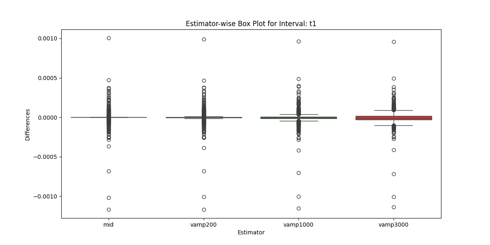
the mid estimator is best and thinnest in spread. That is, the mid price is probably a good estimator of the mid price in the next second. This is less clear, say thirty seconds out:
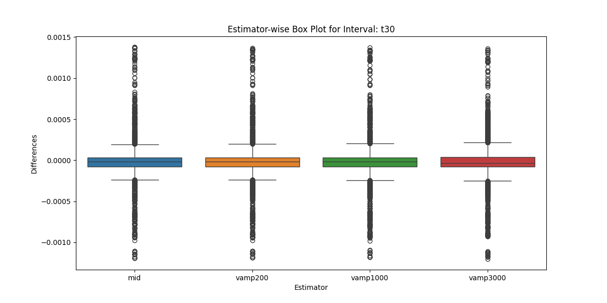
In fact the df_fairprices method prints out some useful statistics:
({'t1':
mid vamp200 vamp1000 vamp3000
MSE 1.263283e-09 1.318690e-09 1.593077e-09 2.173601e-09
MAD 7.467348e-06 1.055727e-05 1.837794e-05 3.000805e-05
Q3 5.000000e-06 9.375000e-06 2.276000e-05 3.833000e-05
Q1 0.000000e+00 0.000000e+00 4.085000e-06 1.375750e-05
Median 0.000000e+00 3.150000e-06 1.047000e-05 2.525750e-05,
't5':
mid vamp200 vamp1000 vamp3000
MSE 1.059491e-08 1.057470e-08 1.039111e-08 1.054808e-08
MAD 3.701356e-05 3.820434e-05 4.156697e-05 4.989065e-05
Q3 4.000000e-05 3.860000e-05 4.199625e-05 4.848083e-05
Q1 0.000000e+00 2.925000e-06 6.315000e-06 1.808167e-05
Median 1.000000e-05 1.062500e-05 1.850500e-05 3.192917e-05,
't15':
mid vamp200 vamp1000 vamp3000
MSE 2.972277e-08 2.954644e-08 2.893512e-08 2.886935e-08
MAD 8.059360e-05 8.102625e-05 8.183297e-05 8.628753e-05
Q3 8.000000e-05 8.000000e-05 7.799500e-05 7.926542e-05
Q1 1.000000e-05 1.000000e-05 1.402500e-05 2.502417e-05
Median 3.500000e-05 3.562500e-05 3.755750e-05 4.391167e-05,
't30':
mid vamp200 vamp1000 vamp3000
MSE 5.757793e-08 5.727437e-08 5.650527e-08 5.595095e-08
MAD 1.264484e-04 1.272426e-04 1.283955e-04 1.310334e-04
Q3 1.200000e-04 1.200000e-04 1.175287e-04 1.153988e-04
Q1 2.000000e-05 2.000000e-05 2.407625e-05 3.529458e-05
Median 5.500000e-05 5.625000e-05 5.992500e-05 6.022833e-05,
't60':
mid vamp200 vamp1000 vamp3000
MSE 1.007904e-07 1.000718e-07 9.870321e-08 9.699616e-08
MAD 1.961512e-04 1.959267e-04 1.962974e-04 1.968203e-04
Q3 2.400000e-04 2.439063e-04 2.441700e-04 2.331175e-04
Q1 3.500000e-05 3.500000e-05 3.868875e-05 4.891542e-05
Median 1.050000e-04 1.050000e-04 1.085200e-04 1.075792e-04}, ...)
mid estimator has the lowest mean-squared error.
From five seconds out and further, the vamp* estimators have lower mean-squared errors due to orderbook imbalance being realized.
Another interesting feature that I have noticed reflected in this dataset and larger datasets, if not somewhat anecdotal, is that as the time interval increases, the notional value of the vamp estimator increases up to certain depths before worsening sharply. This is quite intuitive - longer term price movements take into account deeper structural imbalance; but as we traverse into deeper levels, we start picking up more noise and spoof orders.
TI-Demo
Not all estimators are fair price estimators - in the same paper - another feature studied was the trade imbalance (TI) estimator. It can be a feature in fair price estimation, but a mathematical model needs to be proposed to make fair price estimates from a TI estimate. The idea is simple; short term lop-sided trading on the bid or ask side are likely to lead to further price moves in the same direction. Here is the definition from the paper:
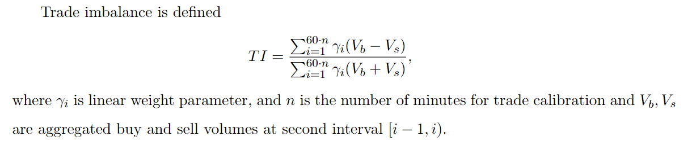
A positive correlation is assumed between the trade imbalance and mid price changes, to reflect demand for the asset when there is trend of market bids. The gamma weight decay gives more weightage to recent trades.
However, this formula is unsatisfactory for a number of general purposes. First, if there is consensus that information decay exists; then there serves no specific reason as to why such decay should not be applied to higher resolutions within each aggregated interval. This may be a trivial concern for second intervals. A bigger issue is that the trade imbalance would be jumpy, or inestimable in the case of illiquid markets where trades occur at infrequent intervals. For example, one buy two minutes ago, and then one sell a minute later would give trade imbalance figures: -1,1 respectively. One may attend to this by widening the interval at which trades are aggregated - for which then the issue waved trivial earlier is no longer so. Imagine a aggregation interval of five minutes: a buy and sell order in the most recent interval 4.59m ago and another 0.01m ago contain significantly different amount of priced-in 'information' to market participants.
That there should be a decay is almost undisputed in finance. Nature of decay, and whether the decay should be w.r.t to trade arrivals in numbers, time distance or some other axis is philosophical. We propose a generalized estimator:
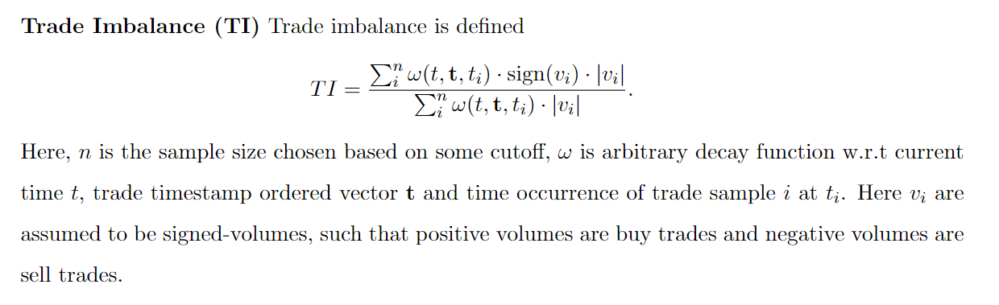
The aformentioned TI formula would be a specific instance of this generalization, where n = number of trades within x seconds, and omega is a piecewise constant decay function.
Again, let's load the same dataset:
from quantpylib.utilities.general import load_pickle
(
ob_timestamps,
bids,
asks,
mids,
trades
) = load_pickle("hft_data")
import numpy as np
import matplotlib.pyplot as plt
from pprint import pprint
from quantpylib.hft.alpha import EVENT_CLOCK, EVENT_LOB, EVENT_TRADE
from quantpylib.hft.alpha import Model
from quantpylib.hft.utils import rolling_apply
from quantpylib.hft.features import trade_imbalance
class TI(Model):
def compute_trade_features(self,trade_buffer):
pass
def event_estimator(
self,ts,event_type,event_id,type_id,
trade_buffer,ob_timestamps,ob_bids,ob_asks,ob_mids,features,
running_event_ids,running_type_ids,**kwargs
):
pass
EVENT_TRADE. We can do this using the quantpylib.hft.utils's rolling_apply function that does what the name-suggests, on rolling numpy array samples:
def compute_trade_features(self,trade_buffer):
tis = rolling_apply(a=trade_buffer,window=20,func=trade_imbalance)
return {
"TI":tis
}
quantpylib.hft.features has implementation like this:
def trade_imbalance(
trades,
decay_function=lambda sample: exponential_weights(arr=sample,unique_values=True,normalize=True),
window_n=None, window_s=None, T=None
):
if T is not None: trades = trades[trades[:,0] <= T]
if sum(1 for param in [window_n,window_s] if param is not None) > 1:
raise ValueError("sample window can only be defined by one of window_n, window_s")
if window_n is not None : trades = trades[-window_n:]
if T is None: T = trades[-1,0]
if window_s is not None: trades = trades = trades[trades[:, 0] >= (T - window_s*1000)]
#trade = ts, price, size, dir
if len(trades) == 0: return 0
weights = decay_function(T - trades[:, 0])
signed_volume = trades[:, 2] * trades[:, 3]
return np.sum(weights * signed_volume) / np.sum(weights * trades[:, 2])
exponential_weights in the repository code; or use your imagination. We just used the last twenty trade events, but of course this is up to you. Making estimates are simple, we just echo this at the correct event:
def event_estimator(
self,ts,event_type,event_id,type_id,
trade_buffer,ob_timestamps,ob_bids,ob_asks,ob_mids,features,
running_event_ids,running_type_ids,**kwargs
):
estimates = {}
if event_type == EVENT_TRADE:
estimates['TI'] = features[EVENT_TRADE]["TI"][type_id]
return estimates
alpha = TI(
ob_timestamps=ob_timestamps,
ob_bids=bids,
ob_asks=asks,
ob_mids=mids,
trade_buffer=trades,
)
alpha.run_estimator()
TI t0 t1 t5 t15 t30 t60
1722092423332 -1.000000 0.202500 0.202340 0.202275 0.202275 0.202205 0.202255
1722092423534 -0.951384 0.202500 0.202345 0.202275 0.202275 0.202205 0.202255
1722092424342 -0.903858 0.202340 0.202305 0.202275 0.202275 0.202205 0.202255
1722092428167 -0.869708 0.202275 0.202275 0.202275 0.202275 0.202205 0.202250
1722092447111 -0.730021 0.202335 0.202305 0.202205 0.202245 0.202265 0.202315
... ... ... ... ... ... ... ...
1722095930541 0.784021 0.200680 0.200705 0.200740 0.200655 0.200775 0.200730
1722095933658 0.847519 0.200705 0.200685 0.200735 0.200635 0.200830 0.200710
1722095934190 0.805306 0.200755 0.200740 0.200730 0.200635 0.200830 0.200690
1722095938015 0.821895 0.200735 0.200730 0.200715 0.200470 0.200865 0.200730
1722095939023 0.696006 0.200730 0.200730 0.200675 0.200465 0.200900 0.200730
Let's propose a fair price model using this TI figures. The model we choose should be determined by the average holding period - obviously if we are buying and selling out the position within one-second, the price in sixty seconds is less relevant.
We shall try a least-squares, zero-intercept simple regression model, with the help of our regression library quantpylib.simulator.models.GeneticRegression.
This allows us to do things like
from quantpylib.simulator.models import GeneticRegression
regmodel = GeneticRegression(
formula="div(minus(t1,t0),t0) ~ TI",
df=variable_df,
intercept=False
)
res = regmodel.ols()
regmodel.plot()
print(res.summary())
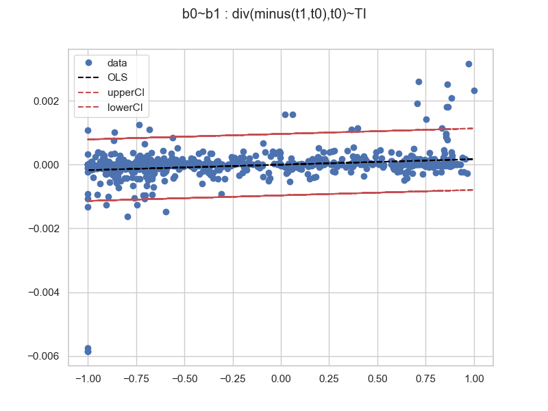
with summary
OLS Regression Results
=======================================================================================
Dep. Variable: b0 R-squared (uncentered): 0.051
Model: OLS Adj. R-squared (uncentered): 0.050
Method: Least Squares F-statistic: 44.43
Date: Sat, 03 Aug 2024 Prob (F-statistic): 4.81e-11
Time: 18:56:51 Log-Likelihood: 5116.2
No. Observations: 825 AIC: -1.023e+04
Df Residuals: 824 BIC: -1.023e+04
Df Model: 1
Covariance Type: nonrobust
==============================================================================
coef std err t P>|t| [0.025 0.975]
------------------------------------------------------------------------------
b1 0.0002 2.59e-05 6.666 0.000 0.000 0.000
==============================================================================
Omnibus: 898.172 Durbin-Watson: 0.984
Prob(Omnibus): 0.000 Jarque-Bera (JB): 163861.949
Skew: -4.759 Prob(JB): 0.00
Kurtosis: 71.383 Cond. No. 1.00
==============================================================================
GeneticRegression.ols allows us to bin data into blocks, and then aggregate
the axis values. We will take defaults:
from quantpylib.simulator.models import Bin
regmodel.ols(bins=50,bin_block="b1",binned_by=Bin.WIDTH)
regmodel.plot()
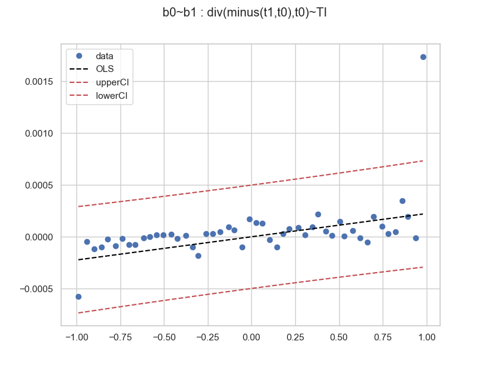
Here the sample size is 825. Let's do the regression on some 448228 trade data samples (collect your own data boys and girls), and then binned, regressed and plotted:
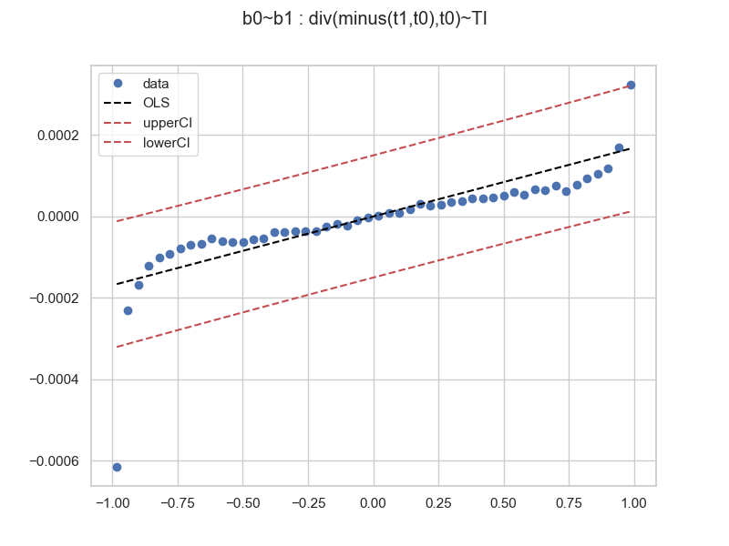
When more data samples are collected, here the trend is obvious. However, we can see that the residuals are non-random. The suggested relationships appears to be curvilinear. Perhaps a higher order polynomial (cubic?). We stop here, fit your own data! The tools have been provided. On the same 448228 size dataset, we try a longer prediction div(minus(t30,t0),t0) ~ TI and get
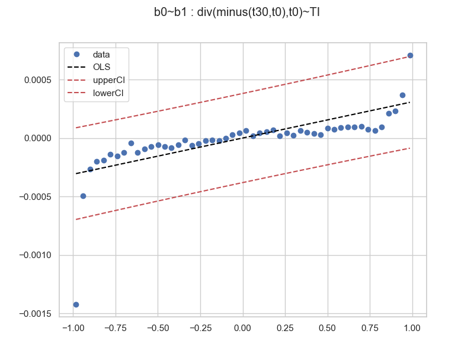
the result is similar.
Limit-Order Book
You may want to use the orderbook with your own data stream. Here is an example of how you can do it (speudo-code)
from quantpylib.hft.lob import LOB
ob = LOB(depth=depth,buffer_size=buffer_size)
async def on_stream(msg):
ob.update(msg['ts'],msg['b'],msg['a'],is_snapshot=True / False)
A limit order book object is only interesting with data already in it. Although we can create a LOB object directly, for demonstration - we are going to obtain it from a market data stream. Fortunately, our quantpylib.gateway.executor library has a l2_book_mirror method that returns a live orderbook object.
We will get data from hyperliquid through the gateway object:
import asyncio
from quantpylib.gateway.master import Gateway
gateway = Gateway(config_keys={"hyperliquid":{}})
async def ob_handler(ob):
print(ob.get_mid(), ob.get_spread())
return
async def main():
await gateway.init_clients()
ob_model = await gateway.executor.l2_book_mirror(
ticker="SOL",
depth=20,
buffer_size=200,
as_dict=False,
on_update=ob_handler,
exc='hyperliquid'
)
await asyncio.sleep(60)
if __name__ == "__main__":
asyncio.run(main())
l2_book_mirror method in quantpylib.wrappers.hyperliquid wrapper, and as_dict=False specifices we want a quantpylib.hft.lob.LOB object.
We can now use the utility functions of the orderbook class. While we are sleeping, the ob_handler prints out...
182.04500000000002 0.010000000000019327
182.04500000000002 0.010000000000019327
182.04500000000002 0.010000000000019327
182.05 0.020000000000010232
182.075 0.010000000000019327
182.075 0.010000000000019327
182.075 0.010000000000019327
182.075 0.010000000000019327
LOB.update method here, since the mirror method takes care of the state of the orderbook on data stream. Let's take a look at some of the utility functions after sleeping:
print(ob_model.get_mid(),ob_model.get_vamp(notional=3000))
print(ob_model.get_vol(exp=True))
print(ob_model.buffer_len())
Trades
Like the LOB object, Trades is a trade buffer stream. Using the data streamed in, we may get useful information such as trade imbalance.
Filling in the trade buffer is extremely easy, let's get the hyperliquid BTC trade stream:
import asyncio
from quantpylib.hft.trades import Trades
from quantpylib.wrappers.hyperliquid import Hyperliquid
async def main():
ticker = "BTC"
hpl = Hyperliquid()
await hpl.init_client()
trades = Trades(buffer_size=1_000_000)
async def trade_handler(trade):
#trade is (time_ms, price, size, dir)
#>>> (1722177301662, 67749.0, 0.0003, -1)
trades.append(trade=trade)
await hpl.trades_subscribe(ticker=ticker,handler=trade_handler)
await asyncio.sleep(1000)
Statistics
This is our statistical library for hft modelling. It is designed to work seamlessly with the data structures from our internal state representations, such as the orderbook LOB and trades Trades, but will work just as well with external data.
For instance, we may be interested in computing orderbook liquidity - to do this we fit an exponential decay model for the hit and -lifted amounts against the distance to mid price. This figure is directly related to the Poisson intensity that is often taken as a model for trade arrivals.
Let's stream both the l2-book data and the trades occuring:
import asyncio
import numpy as np
import matplotlib.pyplot as plt
from quantpylib.hft.lob import LOB
from quantpylib.hft.trades import Trades
from quantpylib.hft.stats import intensity
from quantpylib.wrappers.hyperliquid import Hyperliquid
async def main():
ticker = "BTC"
hpl = Hyperliquid()
await hpl.init_client()
ob = await hpl.l2_book_mirror(
ticker=ticker,
depth=20,
buffer_size=1_000_000,
as_dict=False
)
trades = Trades(buffer_size=1_000_000)
async def trade_handler(trade):
trades.append(trade=trade)
await hpl.trades_subscribe(ticker=ticker,handler=trade_handler)
await asyncio.sleep(60 * 20)
#code goes here...
if __name__ == "__main__":
asyncio.run(main())
quantpylib.hft.stats.intensity, and make some plots:
print(ob.buffer_len()) #2051
print(trades.buffer_len()) #408
params = intensity(
lob_timestamps=ob.get_ts_buffer(),
lob_mids=ob.get_mids_buffer(),
trades=trades.get_buffer(),
)
alpha = params.get("alpha")
kappa = params.get("kappa")
levels = params.get("levels")
agg_amounts = params.get("amounts")
fitted_values = alpha * np.exp(-kappa * levels)
# Plot the actual and fitted
plt.figure(figsize=(10, 6))
plt.plot(levels, agg_amounts, 'o', label='Aggregated Amounts', color='red')
plt.plot(levels, fitted_values, '-', label=f'Fitted Model: $A(d) = {alpha:.2f} e^{{-{kappa:.2f} d}}$', color='blue')
plt.xlabel('Distance from Mid-Price (d)')
plt.ylabel('Aggregated Trade Amount (A(d))')
plt.title('Exponential Decay Model Fit to Aggregated Trade Amounts')
plt.legend()
plt.grid(True)
plt.show()

Values such as kappa are often used as measures of orderbook liquidity. Higher values of kappa indicate strong decay, hence greater trading near the mid-price. Lower values indicate weak decay - market order sizes often wipe out a few levels in the orderbook and have strong price impact. See Hummingbot implementation of computing trade intensity. In stoikov-avellaneda market making formula, kappa appears as term in optimal spread; see Hummingbot avellaneda_market_making.pyx:
self._optimal_spread = self.gamma * vol * time_left_fraction
self._optimal_spread += 2 * Decimal(1 + self.gamma / self._kappa).ln() / self.gamma